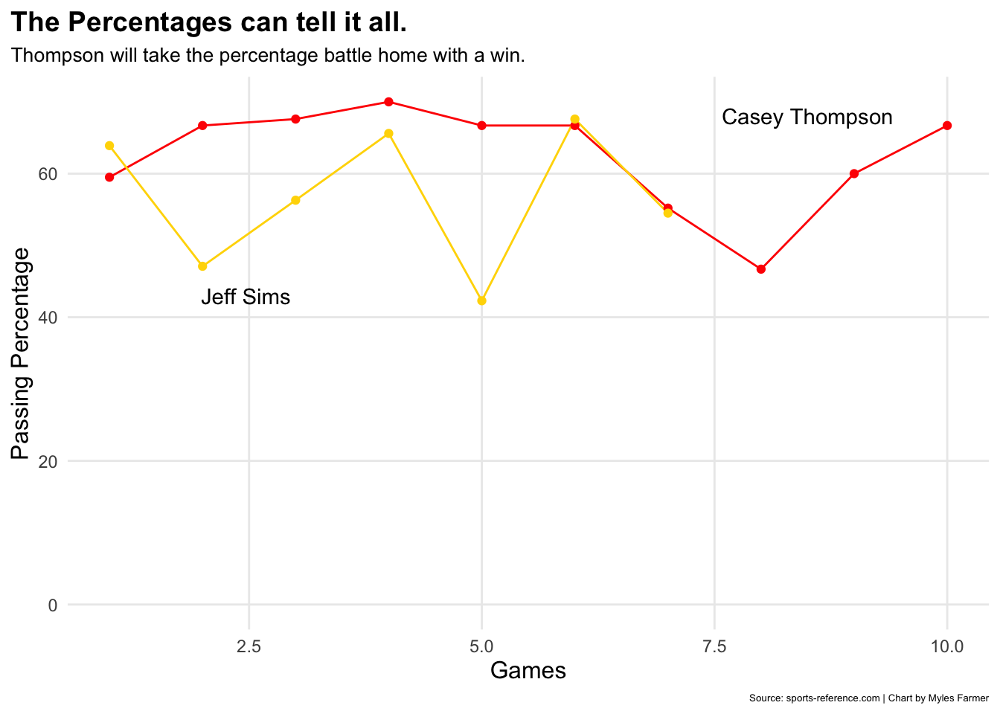
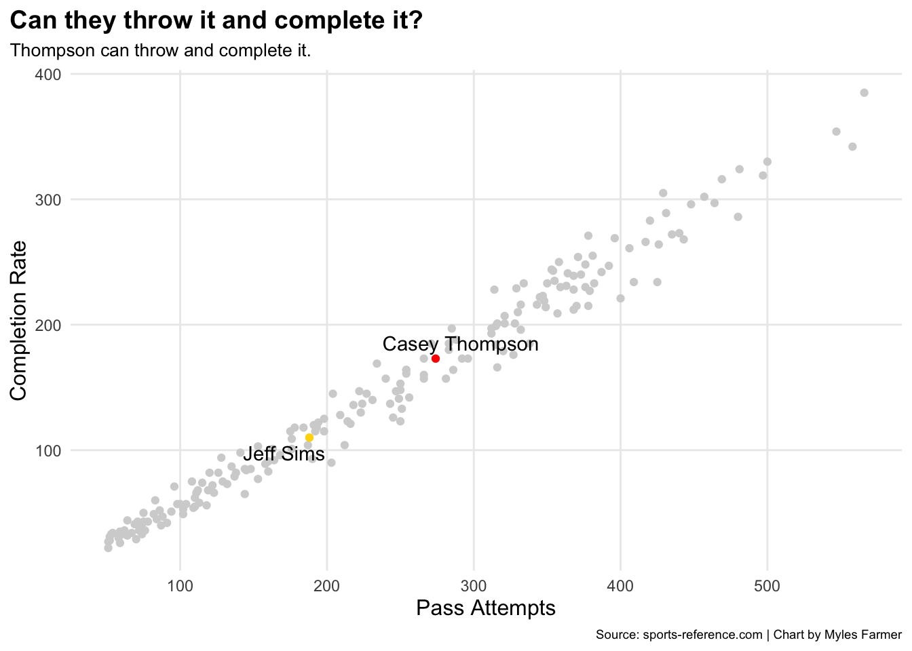
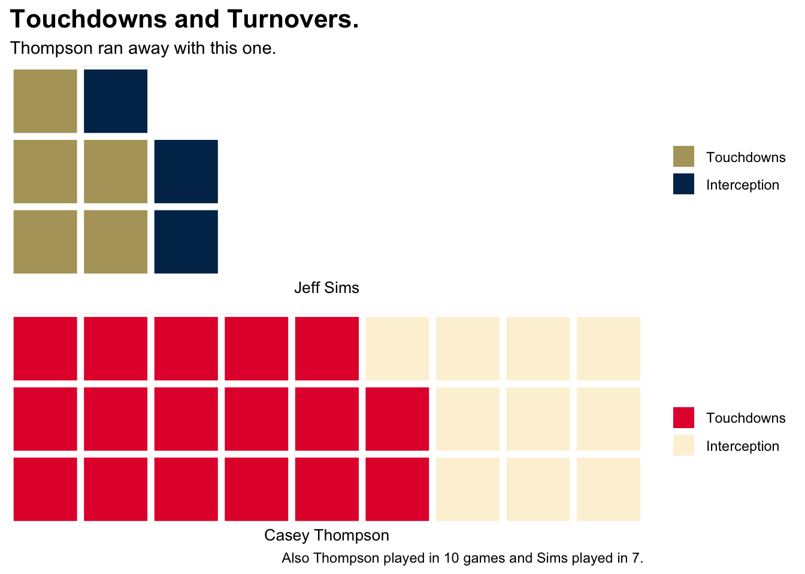

Code
library(tidyverse)
library(rvest)
library(ggplot2)
library(cfbfastR)
library(janitor)
library(waffle)
library(ggrepel)Myles Farmer
July 5, 2023
This project is simply based on two QBs, Jeff Sims and Casey Thompson. These two quarterbacks will be compared to every QB in college football in 2022, but the main focus will be comapring these two to each other to see who’s stats were better within the 2022 season. I’ve seen both Qbs in action so this should be a good one and I’m a little anxious to see what the data reveals.
Here I created a dataframe for Thompsons’ stats of the 2022 season. Using Rvest and finding the Xpath.
# A tibble: 6 × 22
X1 X2 X3 X4 X5 X6 X7 X8 X9 X10 X11 X12 X13
<chr> <chr> <chr> <chr> <chr> <chr> <chr> <chr> <chr> <chr> <chr> <chr> <chr>
1 "" "" "" "" "" "" Pass… Pass… Pass… Pass… Pass… Pass… Pass…
2 "Rk" "Date" "Sch… "" "Opp… "" Cmp Att Pct Yds TD Int Rate
3 "1" "2022… "Neb… "N" "Nor… "L" 25 42 59.5 355 1 2 128.9
4 "2" "2022… "Neb… "" "Nor… "W" 14 21 66.7 193 2 1 165.8
5 "3" "2022… "Neb… "" "Geo… "L" 23 34 67.6 318 1 0 155.9
6 "4" "2022… "Neb… "" "Okl… "L" 14 20 70.0 129 1 0 140.7
# … with 9 more variables: X14 <chr>, X15 <chr>, X16 <chr>, X17 <chr>,
# X18 <chr>, X19 <chr>, X20 <chr>, X21 <chr>, X22 <chr>Qbthompreanamed <- Qbthomp %>%
rename(
Rank=X1,
Date=X2,
School=X3,
Location=X4,
Opponent=X5,
WinLoss=X6,
PassingCmp=X7,
PassingAtt=X8,
PassingPct=X9,
PassingYds=X10,
PassingTds=X11,
PassingInt=X12,
PassingRate=X13,
RushingAtt=X14,
RushingYds=X15,
RushingAvg=X16,
RushingTD=X17,
TacklesSolo=X18,
TacklesAst=X19,
TacklesTot=X20,
TacklesLoss=X21,
TacklesSk=X22) %>%
filter(Rank != "Rk", PassingCmp != "Passing", Date != "10 Games") %>%
mutate(
PassingPct = as.numeric(PassingPct),
Rank = as.numeric(Rank))Here I renamed each column.
# A tibble: 6 × 22
Rank Date School Locat…¹ Oppon…² WinLoss Passi…³ Passi…⁴ Passi…⁵ Passi…⁶
<dbl> <chr> <chr> <chr> <chr> <chr> <chr> <chr> <dbl> <chr>
1 1 2022-08-… Nebra… "N" Northw… L 25 42 59.5 355
2 2 2022-09-… Nebra… "" North … W 14 21 66.7 193
3 3 2022-09-… Nebra… "" Georgi… L 23 34 67.6 318
4 4 2022-09-… Nebra… "" Oklaho… L 14 20 70 129
5 5 2022-10-… Nebra… "" Indiana W 18 27 66.7 270
6 6 2022-10-… Nebra… "@" Rutgers W 24 36 66.7 232
# … with 12 more variables: PassingTds <chr>, PassingInt <chr>,
# PassingRate <chr>, RushingAtt <chr>, RushingYds <chr>, RushingAvg <chr>,
# RushingTD <chr>, TacklesSolo <chr>, TacklesAst <chr>, TacklesTot <chr>,
# TacklesLoss <chr>, TacklesSk <chr>, and abbreviated variable names
# ¹Location, ²Opponent, ³PassingCmp, ⁴PassingAtt, ⁵PassingPct, ⁶PassingYdsHere I created a dataframe for Sims’ stats of the 2022 season. Using Rvest and finding the Xpath.
# A tibble: 6 × 21
X1 X2 X3 X4 X5 X6 X7 X8 X9 X10 X11 X12 X13
<chr> <chr> <chr> <chr> <chr> <chr> <chr> <chr> <chr> <chr> <chr> <chr> <chr>
1 "" "" "" "" "" "" Pass… Pass… Pass… Pass… Pass… Pass… Pass…
2 "Rk" "Date" "Sch… "" "Opp… "" Cmp Att Pct Yds TD Int Rate
3 "1" "2022… "Geo… "" "Cle… "L" 23 36 63.9 164 1 1 105.8
4 "2" "2022… "Geo… "" "Wes… "W" 8 17 47.1 100 0 1 84.7
5 "3" "2022… "Geo… "" "Mis… "L" 18 32 56.3 161 0 0 98.5
6 "4" "2022… "Geo… "@" "Cen… "L" 21 32 65.6 314 1 0 158.4
# … with 8 more variables: X14 <chr>, X15 <chr>, X16 <chr>, X17 <chr>,
# X18 <chr>, X19 <chr>, X20 <chr>, X21 <chr>Qbsimsrenamed <- Qbsims %>%
rename(
Rank=X1,
Date=X2,
School=X3,
Location=X4,
Opponent=X5,
WinLoss=X6,
PassingCmp=X7,
PassingAtt=X8,
PassingPct=X9,
PassingYds=X10,
PassingTds=X11,
PassingInt=X12,
PassingRate=X13,
RushingAtt=X14,
RushingYds=X15,
RushingAvg=X16,
RushingTD=X17,
ReceivingRec=X18,
ReceivingYds=X19,
ReceiveingAvg=X20,
ReceivingTD=X21,
) %>%
filter(Rank != "Rk", PassingCmp != "Passing", Date != "7 Games") %>%
mutate(
PassingPct = as.numeric(PassingPct),
Rank = as.numeric(Rank))Here I renamed each column.
# A tibble: 6 × 21
Rank Date School Locat…¹ Oppon…² WinLoss Passi…³ Passi…⁴ Passi…⁵ Passi…⁶
<dbl> <chr> <chr> <chr> <chr> <chr> <chr> <chr> <dbl> <chr>
1 1 2022-09-… Georg… "" Clemson L 23 36 63.9 164
2 2 2022-09-… Georg… "" Wester… W 8 17 47.1 100
3 3 2022-09-… Georg… "" Missis… L 18 32 56.3 161
4 4 2022-09-… Georg… "@" Centra… L 21 32 65.6 314
5 5 2022-10-… Georg… "@" Pittsb… W 11 26 42.3 102
6 6 2022-10-… Georg… "" Duke W 23 34 67.6 227
# … with 11 more variables: PassingTds <chr>, PassingInt <chr>,
# PassingRate <chr>, RushingAtt <chr>, RushingYds <chr>, RushingAvg <chr>,
# RushingTD <chr>, ReceivingRec <chr>, ReceivingYds <chr>,
# ReceiveingAvg <chr>, ReceivingTD <chr>, and abbreviated variable names
# ¹Location, ²Opponent, ³PassingCmp, ⁴PassingAtt, ⁵PassingPct, ⁶PassingYdsggplot() +
geom_line(data = Qbthompreanamed, aes(x=Rank, y=PassingPct, group=1), color= "red") +
geom_line(data = Qbsimsrenamed, aes(x=Rank, y=PassingPct, group=1), color= "gold") +
geom_point(data = Qbthompreanamed, aes(x=Rank, y=PassingPct, group=1), color= "red") +
geom_point(data = Qbsimsrenamed, aes(x=Rank, y=PassingPct, group=1), color= "gold") +
geom_text(aes(x=8.5, y=68, label="Casey Thompson")) +
geom_text(aes(x=2.5, y=43, label="Jeff Sims ")) +
scale_y_continuous(limits = c(0, 70)) +
labs(
x="Games",
y="Passing Percentage",
title="The Percentages can tell it all.",
subtitle="Thompson will take the percentage battle home with a win.",
caption="Source: sports-reference.com | Chart by Myles Farmer"
) +
theme_minimal() +
theme(plot.title = element_text(size = 14, face = "bold"),
axis.title = element_text(size = 12),
plot.subtitle = element_text(size=10),
plot.caption = element_text(size = 5),
panel.grid.minor = element_blank(),
plot.title.position = "plot"
)
Here we have a line chart that shows each Qb passing percentage throughout the season game by game. Thompson started off very well during the begining of the season and took a dip towards game 8 but he finished the season of pretty good. Sims had a very rocky start throughout the games he played as you can see his percentages are all over the place.
ggplot() +
geom_point(data = qbs, aes(x=passing_att, y=passing_completions), color= "lightgrey") +
geom_point(data = Qb1, aes(x=passing_att, y=passing_completions), color= "gold") +
geom_text_repel(data = Qb1, aes(x=passing_att, y=passing_completions, label=player)) +
geom_point(data = Qb2, aes(x=passing_att, y=passing_completions), color= "red") +
geom_text_repel(data = Qb2, aes(x=passing_att, y=passing_completions, label=player)) +
labs(
x="Pass Attempts",
y="Completion Rate",
title="Can they throw it and complete it?",
subtitle="Thompson can throw and complete it.",
caption="Source: sports-reference.com | Chart by Myles Farmer"
) +
theme_minimal() +
theme(plot.title = element_text(size = 14, face = "bold"),
axis.title = element_text(size = 12),
plot.subtitle = element_text(size=10),
plot.caption = element_text(size = 7),
panel.grid.minor = element_blank(),
plot.title.position = "plot"
)
I wanted to see which Qb was more efficient so I took the amount pass attempts each Qb took, and how many completions they had. I took the main two Qbs which are the red and yellow dots, also every Qb in college football which is the grey. You can see from looking at the chart that Thompson had more attempts and completion due to the fact that Sims played in three less games than Thompson.
Qb1<- c("Touchdowns"= 5, "Interception"= 3,19)
Qb2<- c("Touchdowns"= 17, "Interception"= 10)
iron(
waffle(Qb1,
rows = 3,
xlab="Jeff Sims",
colors = c("#B3A369", "#003057", "white")
) +
labs(
title = "Touchdowns and Turnovers.",
subtitle = "Thompson ran away with this one."
) +
theme(
plot.title = element_text(size = 16, face = "bold"),
axis.title = element_text(size = 10),
axis.title.y = element_blank()
),
waffle(Qb2,
rows = 3,
xlab="Casey Thompson",
colors = c("#E41C38", "#FDF2D9")
) +
labs(
caption = "Also Thompson played in 10 games and Sims played in 7."
)
)
Here I created a waffle chart showing you the touchdown to interception comparison and I feel as if Sims could have kept up with Thompson if he played in the same amount of games. All I did here for the waffle chart was take the number of touchdowns and ints for each Qb, I created a waffle iron for both and I only added padding to Sims to help the chart match Thompsons.